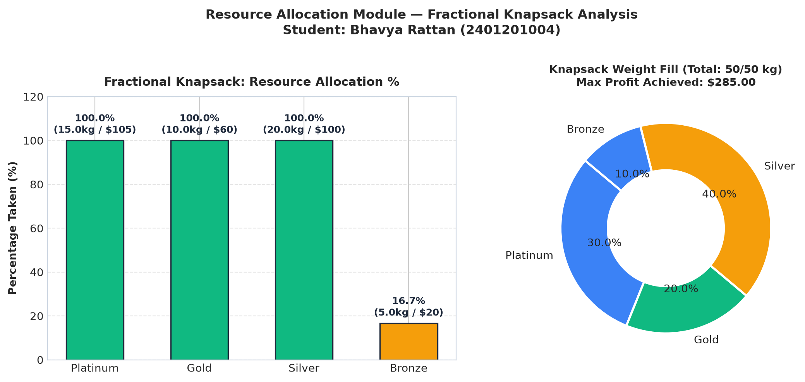
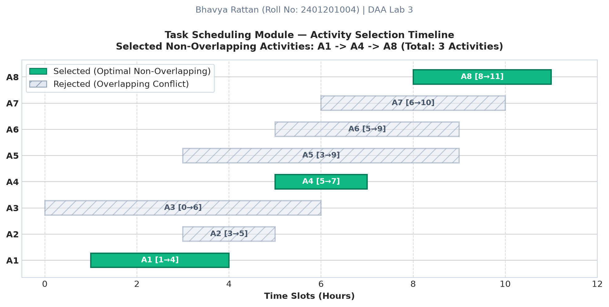
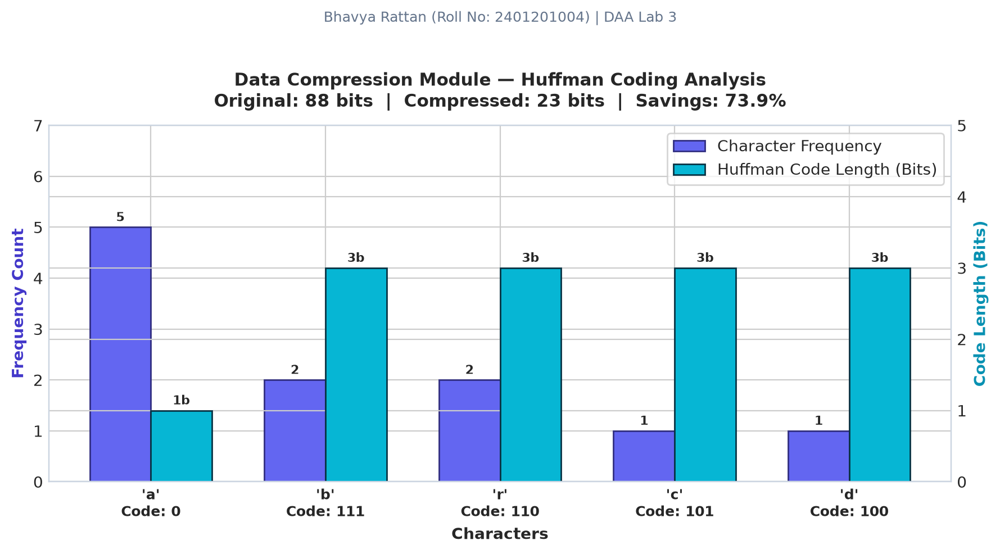
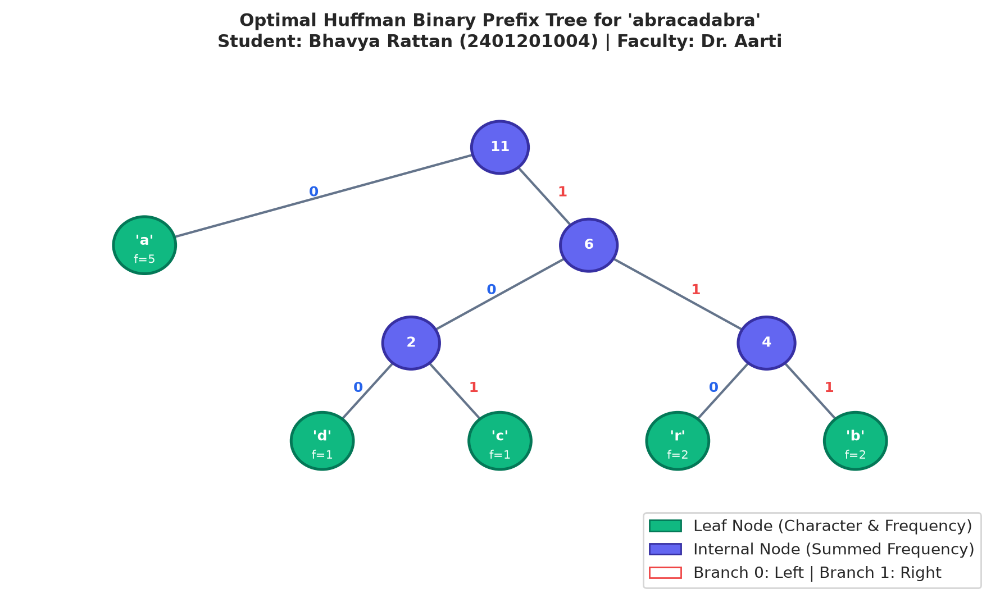
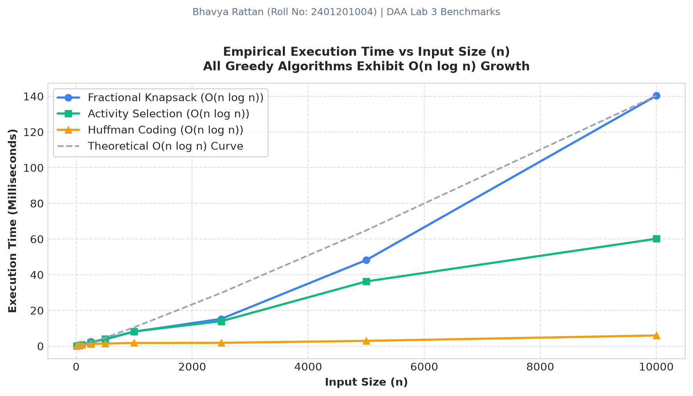
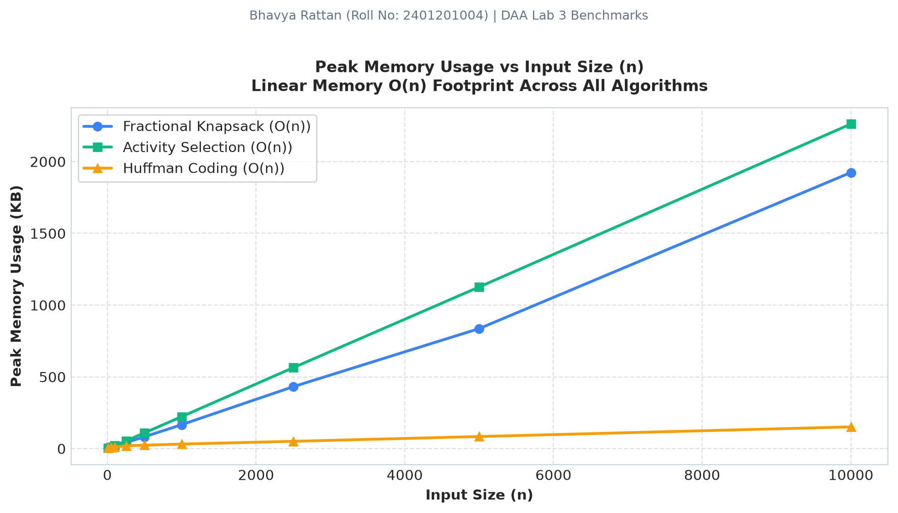

Graphical Results for Fractional Knapsack, Activity Selection & Huffman Coding

Analysis: Displays percentage of each item packed into the knapsack (Gold 100%, Silver 100%, Bronze 66.7%).

Analysis: Gantt-style timeline depicting candidate tasks and the mutually compatible non-overlapping selection.

Analysis: Frequency of characters in "abracadabra" versus the number of bits allocated by Huffman coding.

Analysis: Full binary tree built by merging the two lowest-frequency nodes repeatedly using a min-heap.

Analysis: Real measured execution time across input sizes from $n=10$ to $n=10,000$.

Analysis: Memory measured via Python's `tracemalloc` profiler across growing input sets.